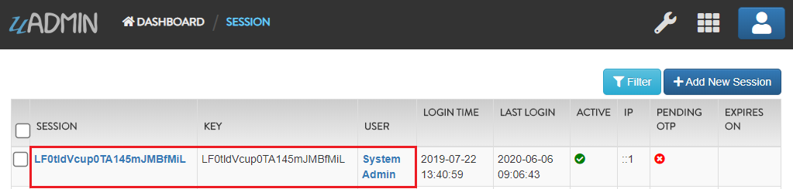
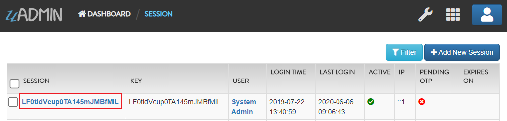
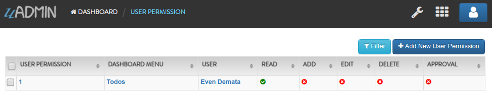
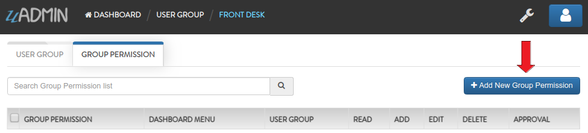
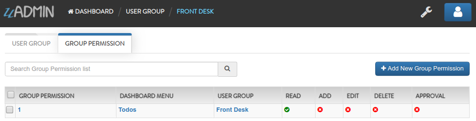

User Functions¶
In this section, we will cover the following functions in-depth listed below:
uadmin.CachePermissions¶
// Type: bool
var CachePermissions = true
CachePermissions allows uAdmin to store permissions data in memory.
uadmin.CacheSessions¶
// Type: bool
var CacheSessions = true
CacheSessions allows uAdmin to store sessions data in memory.
uadmin.CookieTimeout¶
// Type: int
var CookieTimeout = -1
CookieTimeout is the timeout of a login cookie in seconds. If the value is -1, then the session cookie will not have an expiry date.
Let’s apply this function in the main.go.
func main() {
// Some codes
uadmin.CookieTimeout = 10 // <-- place it here
}
Warning
Use it at your own risk. Once the cookie expires, your account will be permanently deactivated. In this case, you must have an extra admin account in the User database.
Login your account, wait for 10 seconds and see what happens.

It will redirect you to the login form because your cookie has already been expired.
Quiz:
uadmin.GetUserFromRequest¶
func GetUserFromRequest(r *http.Request) *User
GetUserFromRequest returns a user from a request.
Parameter:
r *http.Request: Is a data structure that represents the client HTTP request
Before we proceed to the example, read Tutorial Part 9 - Introduction to API to familiarize how API works in uAdmin.
Suppose that the admin account has logined.

Create a file named info.go inside the api folder with the following codes below:
// InfoHandler !
func InfoHandler(w http.ResponseWriter, r *http.Request) {
r.URL.Path = strings.TrimPrefix(r.URL.Path, "/info")
r.URL.Path = strings.TrimSuffix(r.URL.Path, "/")
// Place it here
uadmin.Trail(uadmin.INFO, "GetUserFromRequest: %s", uadmin.GetUserFromRequest(r))
}
Establish a connection in the main.go to the API by using http.HandleFunc. It should be placed after the uadmin.Register and before the StartServer.
func main() {
// Some codes
// InfoHandler
http.HandleFunc("/info/", uadmin.Handler(api.InfoHandler)) // <-- place it here
}
api is the folder name while InfoHandler is the name of the function inside info.go.
Run your application and see what happens.

Check your terminal for the result.
[ INFO ] GetUserFromRequest: System Admin
The result is coming from the user in the dashboard.

There is another way of using this function:
// InfoHandler !
func InfoHandler(w http.ResponseWriter, r *http.Request) {
r.URL.Path = strings.TrimPrefix(r.URL.Path, "/info")
r.URL.Path = strings.TrimSuffix(r.URL.Path, "/")
getuser := uadmin.GetUserFromRequest(r)
getuser.XXXX
}
XXXX contains user fields and functions that you can use. See uadmin.User for the list and examples.
Go to the info.go in API folder containing the following codes below:
// InfoHandler !
func InfoHandler(w http.ResponseWriter, r *http.Request) {
r.URL.Path = strings.TrimPrefix(r.URL.Path, "/info")
r.URL.Path = strings.TrimSuffix(r.URL.Path, "/")
// Get the User that returns the first and last name
getuser := uadmin.GetUserFromRequest(r)
// Print the result using Golang fmt
fmt.Println("GetActiveSession() is", getuser.GetActiveSession())
fmt.Println("GetDashboardMenu() is", getuser.GetDashboardMenu())
// Print the result using Trail
uadmin.Trail(uadmin.INFO, "GetOTP() is %s.", getuser.GetOTP())
uadmin.Trail(uadmin.INFO, "String() is %s.", getuser.String())
}
Run your application and see what happens.
Check your terminal for the result.
GetActiveSession() is Pfr7edaO7bBjv9zL9j1Yi01I
GetDashboardMenu() is [Dashboard Menus Users User Groups Sessions User Permissions Group Permissions Languages Logs Todos Categorys Friends Items]
[ INFO ] GetOTP() is 363669.
[ INFO ] String() is System Admin.
Quiz:
uadmin.IsAuthenticated¶
func IsAuthenticated(r *http.Request) *Session
IsAuthenticated returns if the http.Request is authenticated or not.
Parameter:
r *http.Request: Is a data structure that represents the client HTTP request
See uadmin.Session for the list of fields and functions that you can use in IsAuthenticated.
Before we proceed to the example, read Tutorial Part 9 - Introduction to API to familiarize how API works in uAdmin.
Suppose that the admin account has logined.
Create a file named custom_todo.go inside the api folder with the following codes below:
// CustomTodoHandler !
func CustomTodoHandler(w http.ResponseWriter, r *http.Request) {
r.URL.Path = strings.TrimPrefix(r.URL.Path, "/custom_todo")
r.URL.Path = strings.TrimSuffix(r.URL.Path, "/")
// Get the session key
session := uadmin.IsAuthenticated(r)
// If there is no value in the session, it will return the
// LoginHandler.
if session == nil {
LoginHandler(w, r)
return
}
// Fetch the values from a User model using session IsAuthenticated
user := session.User
userid := session.UserID
username := session.User.Username
active := session.User.Active
// Print the result
uadmin.Trail(uadmin.INFO, "Session / Key: %s", session)
uadmin.Trail(uadmin.INFO, "User: %s", user)
uadmin.Trail(uadmin.INFO, "UserID: %d", userid)
uadmin.Trail(uadmin.INFO, "Username: %s", username)
uadmin.Trail(uadmin.INFO, "Active: %v", active)
// Deactivates a session
session.Logout()
}
Establish a connection in the main.go to the API by using http.HandleFunc. It should be placed after the uadmin.Register and before the StartServer.
func main() {
// Some codes
// CustomTodoHandler
http.HandleFunc("/custom_todo/", uadmin.Handler(api.CustomTodoHandler)) // <-- place it here
}
api is the folder name while CustomTodoHandler is the name of the function inside custom_todo.go.
Run your application and see what happens.

Check your terminal for the result.
[ INFO ] Session / Key: Pfr7edaO7bBjv9zL9j1Yi01I
[ INFO ] Username: System Admin
[ INFO ] UserID: 1
[ INFO ] Username: admin
[ INFO ] Active: true
The result is coming from the session in the dashboard.

And the values in the User model by calling the User, UserID, Username, and Active fields.

And if you go back to the home page, your account has been logged out automatically that redirects you to the login page.
Quiz:
uadmin.Login¶
func Login(r *http.Request, username string, password string) (*Session, bool)
Login return *User and a bool for Is OTP Required.
Parameters:
r *http.Request: Is a data structure that represents the client HTTP request
username string: Is the account username
password string: Is the password of the user account
Used in the tutorial:
Before we proceed to the example, read Tutorial Part 9 - Introduction to API to familiarize how API works in uAdmin.
Create a file named info.go inside the api folder with the following codes below:
// InfoHandler !
func InfoHandler(w http.ResponseWriter, r *http.Request) {
r.URL.Path = strings.TrimPrefix(r.URL.Path, "/info")
r.URL.Path = strings.TrimSuffix(r.URL.Path, "/")
fmt.Println(uadmin.Login(r, "admin", "admin")) // <-- place it here
}
Establish a connection in the main.go to the API by using http.HandleFunc. It should be placed after the uadmin.Register and before the StartServer.
func main() {
// Some codes
// InfoHandler
http.HandleFunc("/info/", uadmin.Handler(api.InfoHandler)) // <-- place it here
}
api is the folder name while InfoHandler is the name of the function inside info.go.
Run your application and see what happens.
Check your terminal for the result.
LF0tldVcup0TA145mJMBfMiL false
The result is coming from the session model that links to the user.
And the user OTP for the System Admin is not enabled.

Visit Login System Tutorials for more examples.
Page:
Quiz:
uadmin.Login2FA¶
func Login2FA(r *http.Request, username string, password string, otpPass string) *Session
Login2FA returns the pointer of User with a two-factor authentication.
Parameters:
r *http.Request: Is a data structure that represents the client HTTP request
username string: Is the account username
password string: Is the password of the user account
otpPass string: Is the OTP code assigned by your terminal
Used in the tutorial:
Before we proceed to the example, read Tutorial Part 9 - Introduction to API to familiarize how API works in uAdmin.
First of all, activate the OTP Required in your System Admin account.

Afterwards, logout your account then login again to get the OTP verification code in your terminal.

[ INFO ] User: admin OTP: 445215
Now create a file named info.go inside the api folder with the following codes below:
package api
import (
"fmt"
"net/http"
"strings"
"github.com/uadmin/uadmin"
)
// InfoHandler !
func InfoHandler(w http.ResponseWriter, r *http.Request) {
r.URL.Path = strings.TrimPrefix(r.URL.Path, "/info")
r.URL.Path = strings.TrimSuffix(r.URL.Path, "/")
// Place it here
fmt.Println(uadmin.Login2FA(r, "admin", "admin", "445215"))
}
Establish a connection in the main.go to the API by using http.HandleFunc. It should be placed after the uadmin.Register and before the StartServer.
func main() {
// Some codes
// InfoHandler
http.HandleFunc("/info/", uadmin.Handler(api.InfoHandler)) // <-- place it here
}
api is the folder name while InfoHandler is the name of the function inside info.go.
Run your application and see what happens.
Check your terminal for the result.
LF0tldVcup0TA145mJMBfMiL
The result is coming from the session model that is currently used.
Visit Login System Tutorials for more examples.
Page:
Quiz:
uadmin.Logout¶
func Logout(r *http.Request)
Logout logs out a user.
Parameter:
r *http.Request: Is a data structure that represents the client HTTP request
Used in the tutorial:
Suppose that the admin account has logined.
Create a file named logout.go inside the api folder with the following codes below:
// LogoutHandler !
func LogoutHandler(w http.ResponseWriter, r *http.Request) {
r.URL.Path = strings.TrimPrefix(r.URL.Path, "/logout")
r.URL.Path = strings.TrimSuffix(r.URL.Path, "/")
uadmin.Logout(r) // <-- place it here
}
Establish a connection in the main.go to the API by using http.HandleFunc. It should be placed after the uadmin.Register and before the StartServer.
func main() {
// Some codes
// LogoutHandler
http.HandleFunc("/logout/", uadmin.Handler(api.LogoutHandler)) // <-- place it here
}
api is the folder name while LogoutHandler is the name of the function inside logout.go.
Run your application and see what happens.

Refresh your browser and see what happens.
Your account has been logged out automatically that redirects you to the login page.
Visit Login System Tutorials for more examples.
Page:
Quiz:
uadmin.Session¶
type Session struct {
Model
Key string
User User `uadmin:"filter"`
UserID uint
LoginTime time.Time
LastLogin time.Time
Active bool `uadmin:"filter"`
IP string `uadmin:"filter"`
PendingOTP bool `uadmin:"filter"`
ExpiresOn *time.Time
}
Session is an activity that a user with a unique IP address spends on a Web site during a specified period of time. 1
func (*Session) GenerateKey¶
func (s *Session) GenerateKey()
GenerateKey automatically generates a random string of characters for you.
func (Session) HideInDashboard¶
func (Session) HideInDashboard() bool
HideInDashboard to return false and auto hide this from dashboard
func (Session) String¶
func (s Session) String() string
String returns the value of the Key.
There are 2 ways you can do for initialization process using this function: one-by-one and by group.
One-by-one initialization:
func main(){
// Some codes
session := uadmin.Session{}
session.Key = "Key"
session.UserID = 1
}
By group initialization:
func main(){
// Some codes
session := uadmin.Session{
Key: "Key",
UserID: 1,
}
}
In this example, we will use “by group” initialization process.
Go to the main.go and apply the following codes below after the RegisterInlines section.
func main(){
// Some codes
now := time.Now()
then := now.AddDate(0, 0, 1)
session := uadmin.Session{
// Generates a random string dynamically
Key: uadmin.GenerateBase64(20),
// UserID of System Admin account
UserID: 1,
LoginTime: now,
LastLogin: now,
Active: true,
IP: "",
PendingOTP: false,
ExpiresOn: &then,
}
// This will create a new session based on the information assigned in
// the session variable.
session.Save()
// Returns the value of the key
uadmin.Trail(uadmin.INFO, "String() returns %s", session.String())
}
Now run your application and see what happens.
Terminal
[ INFO ] String() returns 0G81O_LecZLru3CTm_Qz

The other way around is you can use GenerateKey() function instead of initializing the Key field inside the uadmin.Session. Omit the session.Save() as well because session.Logout() has the ability to save it.
func main(){
now := time.Now()
then := now.AddDate(0, 0, 1)
session := uadmin.Session{
// ------------ KEY FIELD REMOVED ------------
// UserID of System Admin account
UserID: 1,
LoginTime: now,
LastLogin: now,
Active: true,
IP: "",
PendingOTP: false,
ExpiresOn: &then,
}
// Automatically generates a random string of characters for you
session.GenerateKey()
// Deactivates a session
session.Logout()
// ------------ SESSION.SAVE() REMOVED ------------
// Returns the value of the key
uadmin.Trail(uadmin.INFO, "String() returns %s", session.String())
}
Now run your application and see what happens.
Terminal
[ INFO ] String() returns 8dDjMOvX8onCVuRUJstZ1Jrl

Suppose that “SESSIONS” model is visible in the dashboard.

In order to hide it, you can use HideInDashboard() built-in function from uadmin.Session. Go to the main.go and apply the following codes below:
func main(){
// Initialize the session and dashboardmenu
session := uadmin.Session{}
dashboardmenu := uadmin.DashboardMenu{}
// Checks the url from the dashboardmenu. If it matches, it will
// update the value of the Hidden field.
uadmin.Update(&dashboardmenu, "Hidden", session.HideInDashboard(), "url = ?", "session")
}
Now run your application, go to “DASHBOARD MENUS” and you will notice that Sessions is now hidden.

Quiz:
uadmin.SetSessionCookie¶
func SetSessionCookie(w http.ResponseWriter, r *http.Request, s *Session)
SetSessionCookie sets the session cookie value, The value passed in session is nil, then the session assiged will be a no user session.
uadmin.User¶
type User struct {
Model
Username string `uadmin:"required;filter;search"`
FirstName string `uadmin:"filter;search"`
LastName string `uadmin:"filter;search"`
Password string `uadmin:"required;password;help:To reset password, clear the field and type a new password.;list_exclude"`
Email string `uadmin:"email;search"`
Active bool `uadmin:"filter"`
Admin bool `uadmin:"filter"`
RemoteAccess bool `uadmin:"filter"`
UserGroup UserGroup `uadmin:"filter"`
UserGroupID uint
Photo string `uadmin:"image"`
LastLogin *time.Time `uadmin:"read_only"`
ExpiresOn *time.Time
OTPRequired bool
OTPSeed string `uadmin:"list_exclude;hidden;read_only"`
}
User is a system in uAdmin that is used to add, modify and delete the elements of the user.
Here are the following fields and their definitions:
Username - The username that you can use in login process and CreatedBy which is a reserved word in uAdmin
FirstName - The given name of the user
LastName - The surname of the user
Password - A secret word or phrase that must be used to gain admission to something. This field is automatically hashed for security protection.
Email - A method of exchanging messages between people using electronic devices.
Active - Checks whether the user is logged in
Admin - Checks whether the user is authorized to access all features in the system
RemoteAccess - Checks whether the user has access to remote devices
UserGroup - Returns the GroupName
UserGroupID - An ID to access the UserGroup
Photo - Profile picture of the user
LastLogin - The date when the user last logged in his account
ExpiresOn - The date when the user account expires
OTPRequired - Checks whether the OTP is Active
OTPSeed - Private field for OTP
func (*User) GetAccess¶
func (u *User) GetAccess(modelName string) UserPermission
GetAccess returns the user’s permission to a dashboard menu based on their admin status, group and user permissions.
func (*User) GetActiveSession¶
func (u *User) GetActiveSession() *Session
GetActiveSession returns an active session key.
func (*User) HasAccess¶
func (u *User) HasAccess(modelName string) UserPermission
HasAccess returns the user level permission to a model. The modelName the the URL of the model.
func (*User) Login¶
func (u *User) Login(pass string, otp string) *Session
Login logs in user using password and otp. If there is no OTP, just pass an empty string.
func (User) Validate¶
func (u User) Validate() (ret map[string]string)
Validate user when saving from uadmin
func (*User) VerifyOTP¶
func (u *User) VerifyOTP(pass string) bool
VerifyOTP verifies the OTP of the user.
Used in the tutorial:
There are 2 ways you can do for initialization process using this function: one-by-one and by group.
One-by-one initialization:
func main(){
// Some codes
user := uadmin.User{}
user.Username = "Username"
user.FirstName = "First Name"
user.LastName = "Last Name"
}
By group initialization:
func main(){
// Some codes
user := uadmin.User{
Username: "Username",
FirstName: "First Name",
LastName: "Last Name",
}
}
In this example, we will use “by group” initialization process.
Go to the main.go and apply the following codes below after the RegisterInlines section.
func main(){
// Some codes
now := time.Now()
user := uadmin.User{
Username: "even",
FirstName: "Even",
LastName: "Demata",
Password: "123456",
Email: "evendemata@gmail.com",
Active: true,
Admin: false,
RemoteAccess: false,
UserGroupID: 1, // Front Desk
Photo: "/media/images/users.png",
LastLogin: &now,
OTPRequired: false,
}
// This will create a new user based on the information assigned in
// the user variable.
user.Save()
// Returns the first name and the last name
uadmin.Trail(uadmin.INFO, "String() returns %s.", user.String())
}
Now run your application and see what happens.
Terminal
[ INFO ] String() returns Even Demata.

Select “Even Demata” account in the list.

Go to the User Permission tab. Afterwards, click Add New User Permission button at the right side.

Set the Dashboard Menu to “Todos” model, User linked to “Even Demata”, and activate the “Read” only. It means Even Demata user account has restricted access to adding, editing and deleting a record in the Todos model.

Result
Log out your System Admin account. This time login your username and password using the user account that has user permission. Afterwards, you will see that only the Todos model is shown in the dashboard because your user account is not an admin and has no remote access to it.

Now go back to the main.go and apply the following codes below:
func main(){
// Initialize the User function
user := uadmin.User{}
// Fetch the username record as "even" from the user
uadmin.Get(&user, "username = ?", "even")
// Print the results
fmt.Println("GetAccess is", user.GetAccess("todo"))
fmt.Println("GetActiveSession() is", user.GetActiveSession())
fmt.Println("GetDashboardMenu() is", user.GetDashboardMenu())
fmt.Println("GetOTP() is", user.GetOTP())
fmt.Println("HasAccess is", user.HasAccess("todo"))
}
Run your application and check your terminal to see the results.
GetAccess is 1
GetActiveSession() is GOzo21lIBCIaj3YkXJsCZXnj
GetDashboardMenu() is [Todos]
GetOTP() is 251553
HasAccess is 1
Take note the value of the GetOTP(). Go to the main.go again and apply the following codes below:
func main(){
user := uadmin.User{}
uadmin.Get(&user, "username = ?", "even")
// First parameter is password and second parameter is the value from
// GetOTP()
fmt.Println("Login is", user.Login("123456", "251553"))
// The parameter is the value from GetOTP()
fmt.Println("VerifyOTP is", user.VerifyOTP("251553"))
}
Run your application and check your terminal to see the results.
Login is GOzo21lIBCIaj3YkXJsCZXnj
VerifyOTP is true
If your Login does not return anything and VerifyOTP is false, it means your OTP is no longer valid. You need to use GetOTP() again to get a new one. OTP usually takes 5 minutes of validity by default.
Validate() function allows you to search if the user already exists. For instance, the username is “even” and all of the contents about him are there which was already included in the User model. Go to the main.go and apply the following codes below:
func main(){
// Some codes
now := time.Now()
user := uadmin.User{
Username: "even",
FirstName: "Even",
LastName: "Demata",
Password: "123456",
Email: "evendemata@gmail.com",
Active: true,
Admin: false,
RemoteAccess: false,
UserGroupID: 1, // Front Desk
Photo: "/media/images/users.png",
LastLogin: &now,
OTPRequired: false,
}
fmt.Println("Validate is", user.Validate())
}
Run your application and check your terminal to see the results.
Validate is map[Username:Username is already Taken.]
Congrats, now you know how to configure the User fields, fetching the username record and applying the functions of the User.
Visit Login System Tutorials for more examples.
Page:
Quiz:
uadmin.UserGroup¶
type UserGroup struct {
Model
GroupName string `uadmin:"filter"`
}
UserGroup is a system in uAdmin used to add, modify, and delete the group name.
func (*UserGroup) HasAccess¶
func (u *UserGroup) HasAccess(modelName string) GroupPermission
HasAccess returns the Group Permission ID.
func (UserGroup) String¶
func (u UserGroup) String() string
String returns the GroupName.
There are 2 ways you can do for initialization process using this function: one-by-one and by group.
One-by-one initialization:
func main(){
// Some codes
usergroup := uadmin.UserGroup{}
user.GroupName = "Group Name"
}
By group initialization:
func main(){
// Some codes
usergroup := uadmin.UserGroup{
GroupName: "Group Name",
}
}
In this example, we will use “by group” initialization process.
Go to the main.go and apply the following codes below after the RegisterInlines section.
func main(){
// Some codes
usergroup := uadmin.UserGroup{
GroupName: "Front Desk",
}
// This will create a new user group based on the information assigned
// in the usergroup variable.
uadmin.Save(&usergroup)
// Returns the GroupName
uadmin.Trail(uadmin.INFO, "String() returns %s.", usergroup.String())
}
Now run your application and see what happens.
Terminal
[ INFO ] String() returns Front Desk.

Link your created user group to any of your existing accounts (example below is Even Demata).

Afterwards, click the Front Desk highlighted below.

Go to the Group Permission tab. Afterwards, click Add New Group Permission button at the right side.
Set the Dashboard Menu to “Todos” model, User linked to “Even Demata”, and activate the “Read” only. It means Front Desk User Group has restricted access to adding, editing and deleting a record in the Todos model.

Result
Log out your System Admin account. This time login your username and password using the user account that has group permission.
Now go back to the main.go and apply the following codes below:
func main(){
// Initializes the UserGroup function
usergroup := uadmin.UserGroup{}
// Fetches the Group Permission ID from the user
uadmin.Get(&usergroup, "id = ?", 1)
// Prints the HasAccess result
fmt.Println("HasAccess is", usergroup.HasAccess("todo"))
}
Run your application and check your terminal to see the result.
HasAccess is 1
Congrats, now you know how to add the UserGroup from code, fetching the record from ID and applying the functions of the UserGroup.
Quiz:
Reference¶
- 1
QuinStreet Inc. (2018). User Session. Retrieved from https://www.webopedia.com/TERM/U/user_session.html